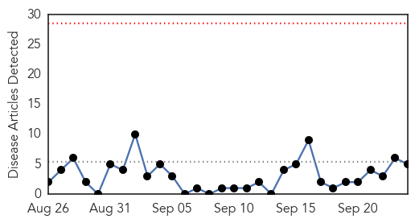

30 Day Trends
Web: 0 alerts, 0 warnings
Twitter: 1 alerts, 0 warnings
Top Articles:
- 0.794
- What Is Hepegivirus? New Virus Similar To Hepatitis C Discovered In Blood Supply
- 0.788
- New virus transmitted through blood discovered
- 0.559
- Scientists Discover New Human Virus Similar To Hepatitis C
- 0.542
- Lawsuit filed in potential Hepatitis exposure
- 0.502
- Refugees and migrants are more prone to foodborne diseases
Top Tweets:
-
No tweets found for Sep 24, 2015
Web/News Articles
Tweets